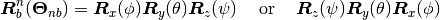
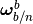
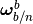
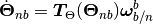

Stewart Platforms¶
Kinematics¶
The orientation and position of the Stewart platforms are given as:

where the notation used  is the position of the Stewart platform’s body frame
is the position of the Stewart platform’s body frame  relative to the inertal frame
relative to the inertal frame  , given in the inertial frame . The velocites and accelerations share the same notation and are defined as:
, given in the inertial frame . The velocites and accelerations share the same notation and are defined as:

The Euler angle sequence is defined by conventional rotation matrices. The explicit rotation sequence is given as:

The accompanying transformation between time derivatives of the Euler angles  and the local body-fixed rotational velocities  is given by the following two equations:
and the local body-fixed rotational velocities  is given by the following two equations:


![\underbrace{
\left[ \begin {array}{ccc} \cos \left( \psi \right) \cos \left(
\theta \right) &-\sin \left( \psi \right) \cos \left( \theta \right) &
\sin \left( \theta \right) \\ \noalign{\medskip}\cos \left( \psi
\right) \sin \left( \theta \right) \sin \left( \phi \right) +\sin
\left( \psi \right) \cos \left( \phi \right) &-\sin \left( \psi
\right) \sin \left( \theta \right) \sin \left( \phi \right) +\cos
\left( \psi \right) \cos \left( \phi \right) &-\cos \left( \theta
\right) \sin \left( \phi \right) \\ \noalign{\medskip}-\cos \left(
\psi \right) \sin \left( \theta \right) \cos \left( \phi \right) +\sin
\left( \psi \right) \sin \left( \phi \right) &\sin \left( \psi
\right) \sin \left( \theta \right) \cos \left( \phi \right) +\cos
\left( \psi \right) \sin \left( \phi \right) &\cos \left( \theta
\right) \cos \left( \phi \right) \end {array} \right]
}_{\bm{R}_{xyz}}](_images/math/af6e7a65759cf57883980b94b75ec82632233734.png)
The feedback signals accessible as described in the Remote UDP Interface.